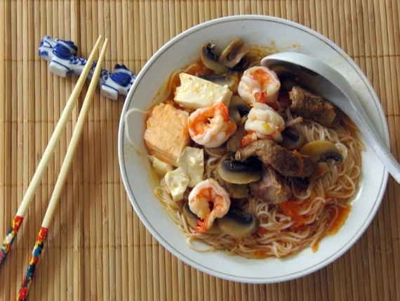

Back to Home
Tasty Tomato Rice Noodle Soup!

Homey and classic tomato rice noodle soup!
Asian-Style Tomato Soup with Rice Noodles is a delicious,
versatile recipe for the family or for a quick dinner.
Ingredients
- Vermicelli
- Tomatoes
- Tomato Paste
- Shrimp
- Ginger
- Salt, sugar, oyster sauce, olive oil
- Optional: vegetables, tofu, herbs
Steps
- Slice the tomatoes, ginger, and any other herbs.
- Prepare shrimp and season with salt, sugar,
olive oil, and oyster sauce
- Add enough olive oil to coat half of the pot's bottom. Add
3 slices of ginger, sliced tomatoes, and stir.
- Add 2 tsp of tomato paste and 6 cups of water. Boil for 5-7
minutes, then add vegetables(if any) then simmer.
- In a separate pot, boil noodles until they start to separate.
- Add shrimp to the original pot. Season with more oyster sauce,
salt, and sugar. Simmer for 3 more minutes.
- Add drained noodles to tomato soup, serve, and enjoy!